9. Catch apples¶
In this practice we are going to program a game that consists of catching apples with a cat and avoiding the lightning that kills. The cat will move with the right and left keys. When the cat loses its three lives, the game will be over.

We start the Scratch editor.
Press the language button
 in the top bar and choose English.
in the top bar and choose English.Now we choose a suitable backdrop for our game. We changed the backdrop to a desert.
Press the button choose a backdrop
 .
.We look in the Exteriors section.
and select the Desert backdrop.
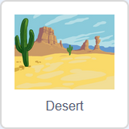We change the name of the object to Cat.
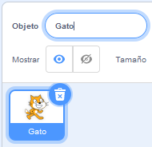We create the variable lives that will store the number of lives that the Cat has. When this variable is equal to zero, the program will end.
Press the variables button
 ,
,click on create a variable
 .
.We change the name of the variable to lives
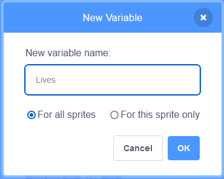Finally, click on the OK button.
Now we program the initialization instructions for the Cat object. This program will give the cat three lives, display the value on the screen, place the cat under the screen, and rotate left and right style.
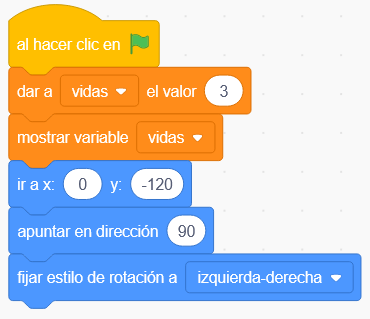We continue giving the cat movement to one side and to the other. The following program checks whether a left arrow or right arrow key has been pressed and if so, moves the cat in one direction or the other.
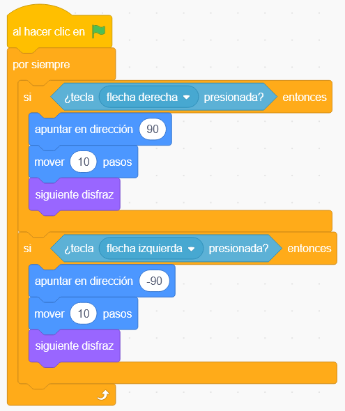Press the green flag
 to test the operation of the program.
to test the operation of the program.Now we create the variable points that will store the number of points that we have obtained by catching the apples.
Press the variables button
,click on create a variable
.We change the name of the variable to points

Finally, click on the OK button.
Next we add a new character, an apple.
Press the button choose an object
 .
.We look in the Food section.
and select the Apple object.
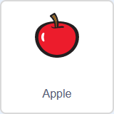Let's create another costume for the apple, a squashed apple. First we go to the costumes tab

Next we duplicate the apple costume.
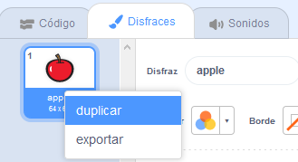Now we select the duplicate costume and crush it.
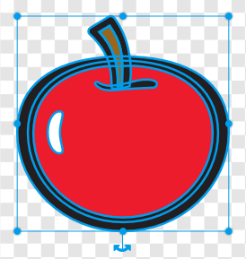 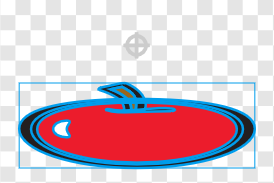Now we can carry out the apple program within the code tab
 of the Apple.
of the Apple.First we are going to hide the apple, we assign zero to the points and we are creating clones of the apple so that they appear on the screen, while the cat has lives.
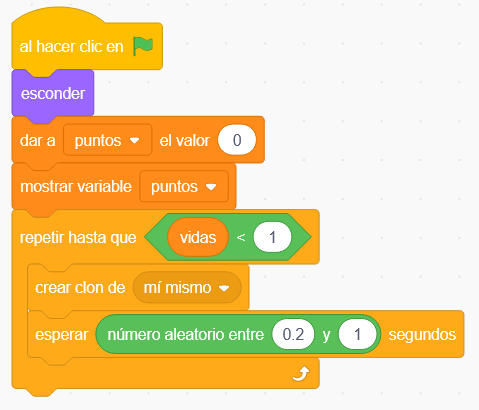Before executing the following program, the block "fall ground" must be defined. Within the section My blocks
 press "Create a block"
press "Create a block"  and in the name of the block we write "fall ground".
and in the name of the block we write "fall ground".The following program will make each clone of the apple appear on top in a random position, then fall to the ground.
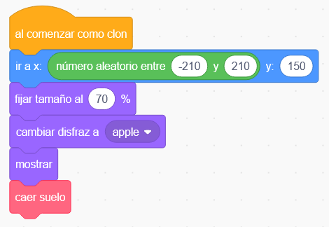Finally we program the block that makes the apple fall to the ground. In case of touching the cat, it will increase one point and the clone of the apple disappears. If the apple clone touches the ground, it will be crushed.
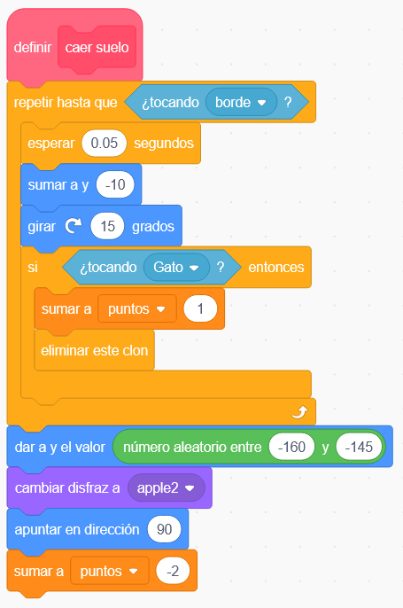Press the green flag
to test the operation of the program.Added a new item, a lightning.
Press the button choose an object
.We look in the All section.
and select the Lightning object.
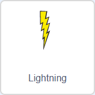Now we carry out the program so that lightning clones are generated every few seconds.
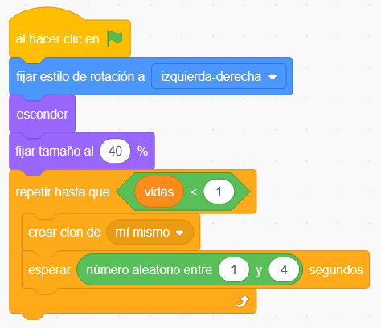Every time a clone is generated, its behavior will be as follows.
It will drop down from the top of the screen. If you touch the cat, the lives are reduced by one. If you touch the bottom edge, the beam disappears.
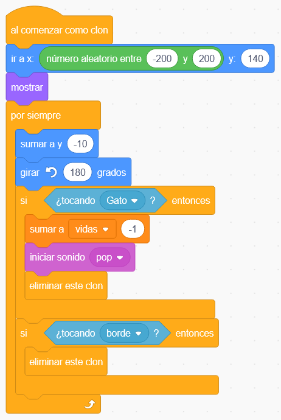Finally we program the cat to die when the lives reach zero. First we select the cat object.
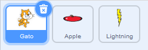Next we add the program.
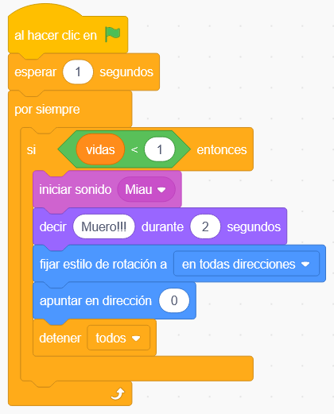Press the green flag
to test the operation of the program.
{kind=link}
{kind=link}
{kind=link}
{kind=link}
{kind=link}
{kind=link}
{kind=link}
{kind=link}
Challenges¶
Add a new character that takes lives just like lightning. This new character should appear after 10 seconds of gameplay.
Modify the program so that the number of lightning bolts increases over time, making the game increasingly difficult.